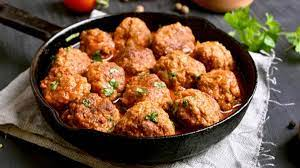

Albondigas

Receta para hacer unas ricas albondigas
Ingrendientes
- 500 gramos de carne molida de res
- 4 jitomates
- 1/2 cebolla blanca
- 1 pimiento rojo
- 2 calabacitas
- 2 zanahorias
- 1 huevo
- 1/2 taza de pan molido
- 1 cucharada de margarina con sal La Villita
- Pimienta
- 1 litro de agua
Preparación
- En un tazón mezclamos la carne molida con el huevo, el pan molido y una pizca de sal y de pimienta, para luego darle forma a las albóndigas.
- Cortamos el jitomate, el pimiento rojo y la cebolla en cubos pequeños y en seguida sofreímos en una cacerola con una cucharada de margarina con sal.
- Cuando la cebolla se haya suavizado, agregamos el agua y esperamos a que comience a hervir antes de agregar las albóndigas de carne.
- Agregamos la calabaza cortada en cubos y la zanahoria rebanada y sazona con una pizca de sal.
- Tapamos la cacerola y dejamos cocer a fuego bajo hasta que las albóndigas estén bien cocidas.